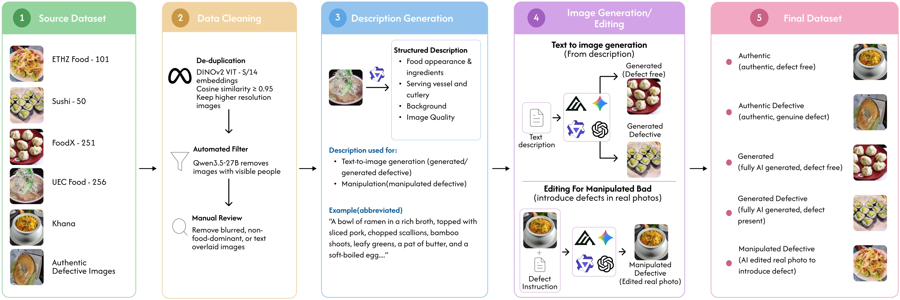
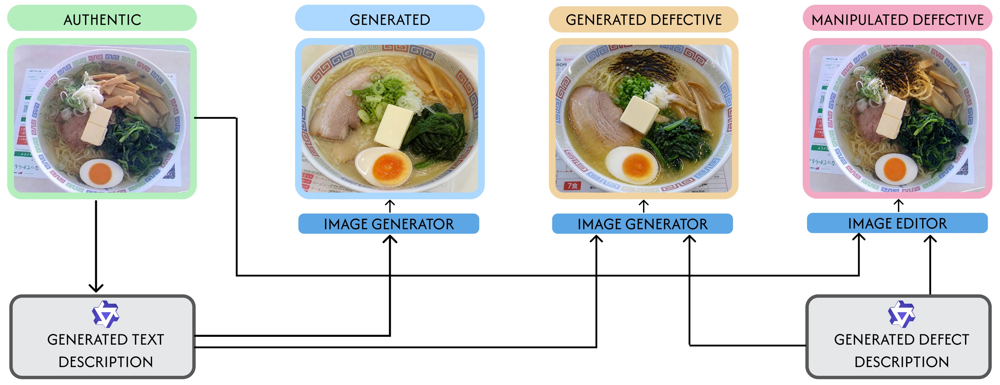
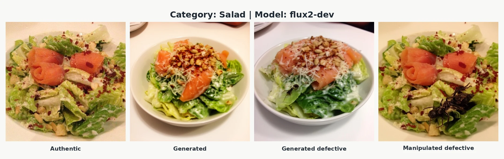
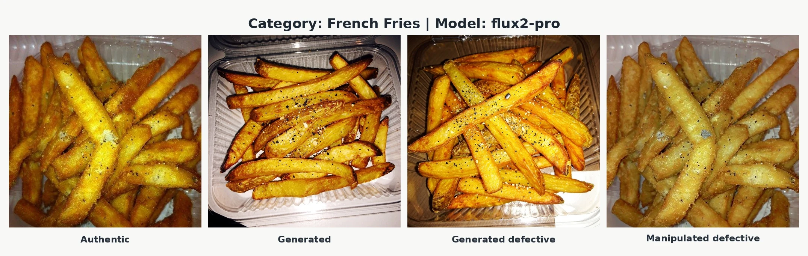
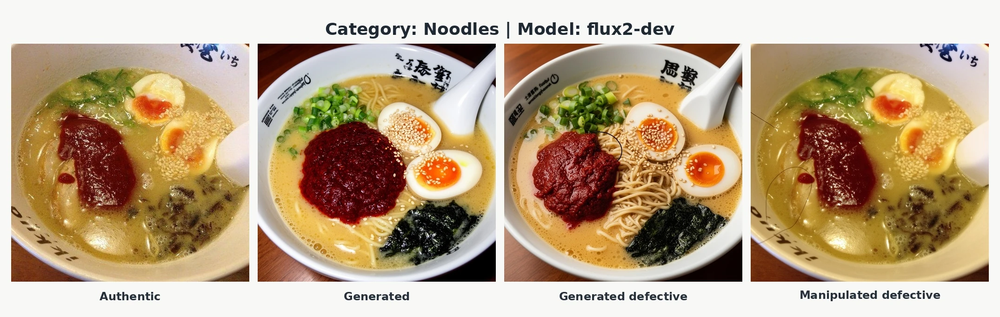
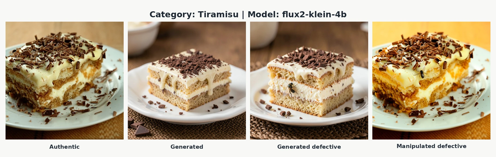
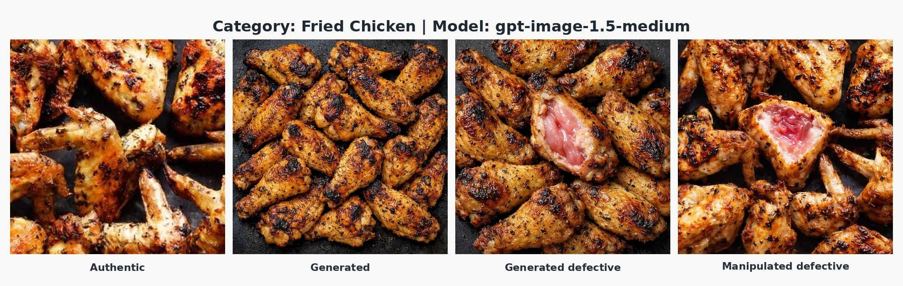
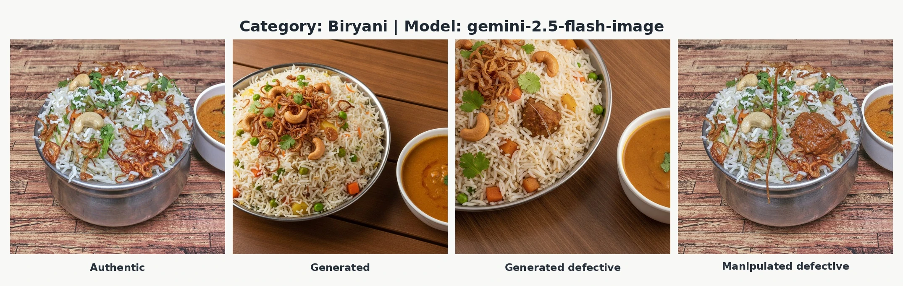
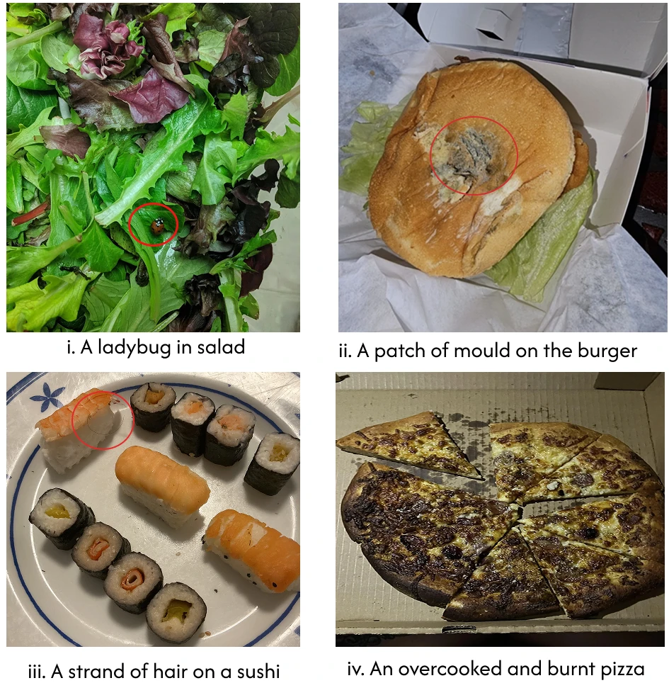

Accepted at WACV 2027 · Datasets Track
FoodClaim: A Benchmark for Detecting Generated and Manipulated Food Defects
Abstract
Generative image models make it easy to fabricate photographic evidence, and food delivery platforms already receive refund claims backed by generated or edited images of spoiled or damaged meals. Detecting such images differs from standard synthetic image detection: a deceptive complaint image is often an authentic photograph with a small edited region, and the question is not only how the image was produced but whether the depicted defect is real. We introduce FoodClaim, a benchmark of 220,066 images across 13 food categories and five classes that separates image authenticity (authentic, generated, or manipulated) from food condition (defect-free or defective). Every generated and manipulated image is derived from a specific authentic photograph with a shared description, defect instruction, and generator family; defects follow a plausibility-rated taxonomy of 78 food-defect combinations, and seven of the 12 generator configurations, including closed commercial models, are held out from training. Across 14 pretrained backbones, a synthetic image detection baseline, and vision-language models, the best detector falls from 88.2% accuracy on seen generators to 63.8% on held-out ones, and frequency-domain inputs do not close the gap. FoodClaim will be publicly released with all descriptions, defect instructions, and source-image lineage.
Dataset Construction

Matched-image construction


Dataset Statistics
164,614 training images
55,452 test images
FoodClaim contains 220,066 images across 13 food categories and five classes: authentic (Auth), authentic-defective (Auth-Def), generated (Gen), generated-defective (Gen-Def), and manipulated-defective (Manip-Def).
| Food category | Train | Test | Total images |
|---|---|---|---|
| Biryani | 19,790 | 6,186 | 25,976 |
| Pizza | 23,237 | 7,585 | 30,822 |
| Burger | 4,009 | 1,249 | 5,258 |
| French Fries | 4,118 | 1,243 | 5,361 |
| Fried Chicken | 12,228 | 3,658 | 15,886 |
| Sandwich | 33,433 | 9,273 | 42,706 |
| Noodles | 9,300 | 2,893 | 12,193 |
| Sushi | 11,874 | 8,898 | 20,772 |
| Dosa | 20,365 | 6,771 | 27,136 |
| Dumplings | 6,530 | 1,784 | 8,314 |
| Kebab | 10,209 | 3,389 | 13,598 |
| Salad | 5,126 | 1,258 | 6,384 |
| Tiramisu | 4,395 | 1,265 | 5,660 |
| Total | 164,614 | 55,452 | 220,066 |
Full counts by category, class, and split
| Food category | Auth | Auth-Def | Gen | Gen-Def | Manip-Def | |||||
|---|---|---|---|---|---|---|---|---|---|---|
| Train | Test | Train | Test | Train | Test | Train | Test | Train | Test | |
| Biryani | 4,913 | 1,543 | 154 | 52 | 4,913 | 1,542 | 4,897 | 1,533 | 4,913 | 1,516 |
| Pizza | 5,775 | 1,892 | 143 | 48 | 5,775 | 1,890 | 5,769 | 1,883 | 5,775 | 1,872 |
| Burger | 988 | 310 | 66 | 22 | 988 | 308 | 979 | 307 | 988 | 302 |
| French Fries | 1,014 | 308 | 68 | 23 | 1,014 | 305 | 1,008 | 305 | 1,014 | 302 |
| Fried Chicken | 3,032 | 912 | 118 | 40 | 3,032 | 910 | 3,014 | 905 | 3,032 | 891 |
| Sandwich | 8,354 | 2,327 | 46 | 15 | 8,354 | 2,325 | 8,325 | 2,319 | 8,354 | 2,287 |
| Noodles | 2,307 | 721 | 76 | 26 | 2,307 | 721 | 2,303 | 719 | 2,307 | 706 |
| Sushi | 2,951 | 2,242 | 72 | 24 | 2,951 | 2,226 | 2,949 | 2,216 | 2,951 | 2,190 |
| Dosa | 5,094 | 1,700 | 21 | 7 | 5,094 | 1,698 | 5,062 | 1,688 | 5,094 | 1,678 |
| Dumplings | 1,622 | 444 | 47 | 16 | 1,622 | 444 | 1,617 | 444 | 1,622 | 436 |
| Kebab | 2,537 | 846 | 74 | 24 | 2,537 | 843 | 2,524 | 840 | 2,537 | 836 |
| Salad | 1,269 | 312 | 58 | 19 | 1,269 | 312 | 1,261 | 311 | 1,269 | 304 |
| Tiramisu | 1,083 | 312 | 63 | 22 | 1,083 | 312 | 1,083 | 312 | 1,083 | 307 |
| Total | 40,939 | 13,869 | 1,006 | 338 | 40,939 | 13,836 | 40,791 | 13,782 | 40,939 | 13,627 |
Auth = authentic; Auth-Def = authentic-defective; Gen = generated; Gen-Def = generated-defective; Manip-Def = manipulated-defective. Small differences between matched classes arise from failed generations, safety-filter rejections, and exact-duplicate removal. Sushi’s larger test share follows the official Sushi-50 split.
Examples
Matched quadruplets from the test split. From left to right: the authentic source photograph, a generated image from its structured description, a generated-defective image from the description merged with a defect instruction, and a manipulated-defective image obtained by applying the same instruction to the source photograph. Each caption gives the food category, generator, and a shortened defect instruction.




More matched examples








Genuine food defects


These photographs form the separate Auth-Def class: 1,344 images, approximately 0.6% of FoodClaim.
Images reproduced from the FoodClaim paper. Authentic-defective photographs form a separate fifth class.
Image Generators
Generated and manipulated images are produced using 12 generator configurations from the FLUX, GPT-Image, Gemini, and Qwen families. Training uses five FLUX configurations: FLUX.1-schnell, FLUX.1-dev, FLUX.2-dev, FLUX.2-Klein-9B, and FLUX.2-Klein-4B. FLUX.1-Kontext-dev provides editing for the two FLUX.1 text-to-image models.
Seven configurations are held out for testing: FLUX.2-pro, GPT-Image-1.5 (Medium), GPT-Image-2 (Medium and Low), Gemini-2.5-Flash-Image, Gemini-3.1-Flash-Image, and Qwen-Image-2512 with Qwen-Image-Edit-2511. These account for approximately 70% of generated and manipulated test images.
| Generator / editor | Gen | Gen-Def | Manip-Def | |||
|---|---|---|---|---|---|---|
| Train | Test | Train | Test | Train | Test | |
| In-distribution configurations | ||||||
| FLUX.1-Kontext-dev | – | – | – | – | 8,196 | 1,689 |
| FLUX.1-schnell | 4,103 | 848 | 4,103 | 847 | – | – |
| FLUX.1-dev | 4,093 | 840 | 4,093 | 839 | – | – |
| FLUX.2-dev | 16,368 | 813 | 16,220 | 805 | 16,368 | 813 |
| FLUX.2-Klein-9B | 8,188 | 819 | 8,188 | 810 | 8,188 | 819 |
| FLUX.2-Klein-4B | 8,187 | 831 | 8,187 | 826 | 8,187 | 832 |
| Held-out configurations · test split only | ||||||
| FLUX.2-pro | – | 1,408 | – | 1,407 | – | 1,411 |
| GPT-Image-1.5 (Medium) | – | 1,392 | – | 1,391 | – | 1,396 |
| GPT-Image-2 (Medium) | – | 1,395 | – | 1,395 | – | 1,393 |
| GPT-Image-2 (Low) | – | 1,388 | – | 1,387 | – | 1,387 |
| Gemini-2.5-Flash-Image | – | 1,367 | – | 1,352 | – | 1,349 |
| Gemini-3.1-Flash-Image | – | 1,356 | – | 1,349 | – | 1,156 |
| Qwen-Image-2512 / Qwen-Image-Edit-2511 | – | 1,379 | – | 1,374 | – | 1,382 |
| Total | 40,939 | 13,836 | 40,791 | 13,782 | 40,939 | 13,627 |
FLUX.1-Kontext-dev edits the FLUX.1 allocations; Qwen-Image-Edit-2511 edits the Qwen-Image-2512 allocations. The lower Gemini-3.1 Manip-Def count reflects content-safety rejections. Dashes indicate no allocation.
Baselines
The benchmark evaluates 14 pretrained backbones from the ResNet, MobileNetV3, ConvNeXt, ViT, and DINOv3 families. UnivFD is adapted from binary detection to five-way classification by training a linear head on frozen CLIP features. The following results use RGB input.
| Backbone | Params | Overall | ID | OOD | |||
|---|---|---|---|---|---|---|---|
| Acc. | W-F1 | Acc. | W-F1 | Acc. | W-F1 | ||
| Fine-tuned backbones | |||||||
| ResNet-18 | 11.18M | 0.63 | 0.62 | 0.81 | 0.80 | 0.47 | 0.55 |
| ResNet-34 | 21.29M | 0.64 | 0.63 | 0.82 | 0.82 | 0.46 | 0.54 |
| ResNet-50 | 23.52M | 0.65 | 0.65 | 0.84 | 0.84 | 0.48 | 0.56 |
| MobileNetV3-Small | 1.52M | 0.63 | 0.62 | 0.77 | 0.77 | 0.50 | 0.56 |
| MobileNetV3-Large | 4.21M | 0.67 | 0.66 | 0.84 | 0.84 | 0.51 | 0.59 |
| ConvNeXt-Tiny | 27.82M | 0.71 | 0.70 | 0.90 | 0.90 | 0.53 | 0.62 |
| ConvNeXt-Small | 49.46M | 0.69 | 0.69 | 0.90 | 0.90 | 0.50 | 0.61 |
| ConvNeXt-Base | 87.57M | 0.72 | 0.72 | 0.91 | 0.90 | 0.55 | 0.64 |
| ViT-Small | 21.67M | 0.71 | 0.71 | 0.88 | 0.88 | 0.56 | 0.65 |
| ViT-Base | 85.80M | 0.74 | 0.74 | 0.89 | 0.89 | 0.61 | 0.68 |
| ViT-Large | 303.31M | 0.74 | 0.74 | 0.90 | 0.90 | 0.60 | 0.68 |
| DINOv3-Small | 21.59M | 0.71 | 0.70 | 0.88 | 0.88 | 0.55 | 0.62 |
| DINOv3-Small+ | 28.69M | 0.73 | 0.72 | 0.90 | 0.90 | 0.57 | 0.64 |
| DINOv3-Base | 85.65M | 0.72 | 0.71 | 0.91 | 0.91 | 0.54 | 0.61 |
| Synthetic image detection baseline | |||||||
| UnivFD ViT-B/32 | 151.28M* | 0.59 | 0.59 | 0.69 | 0.70 | 0.50 | 0.56 |
| UnivFD ViT-B/16 | 149.62M* | 0.60 | 0.60 | 0.71 | 0.72 | 0.51 | 0.57 |
| UnivFD ViT-L/14 | 427.62M* | 0.64 | 0.64 | 0.78 | 0.78 | 0.52 | 0.60 |
ID and OOD refer to the test subsets with seen and held-out generators. Values follow the paper’s RGB results table. *UnivFD parameter counts include the frozen CLIP encoder; only the linear head is trained (2,565 parameters for ViT-B/32 and ViT-B/16, and 3,845 for ViT-L/14).
Per-class F1 scores
| Backbone | Auth | Auth-Def | Gen | Gen-Def | Manip-Def |
|---|---|---|---|---|---|
| Fine-tuned backbones | |||||
| ResNet-18 | 0.70 | 0.61 | 0.61 | 0.55 | 0.63 |
| ResNet-34 | 0.70 | 0.56 | 0.63 | 0.54 | 0.64 |
| ResNet-50 | 0.72 | 0.63 | 0.64 | 0.56 | 0.66 |
| MobileNetV3-Small | 0.71 | 0.46 | 0.62 | 0.54 | 0.62 |
| MobileNetV3-Large | 0.73 | 0.62 | 0.65 | 0.59 | 0.67 |
| ConvNeXt-Tiny | 0.75 | 0.72 | 0.69 | 0.62 | 0.75 |
| ConvNeXt-Small | 0.70 | 0.66 | 0.68 | 0.64 | 0.73 |
| ConvNeXt-Base | 0.75 | 0.72 | 0.70 | 0.66 | 0.76 |
| ViT-Small | 0.76 | 0.74 | 0.70 | 0.65 | 0.73 |
| ViT-Base | 0.79 | 0.75 | 0.72 | 0.67 | 0.76 |
| ViT-Large | 0.78 | 0.82 | 0.74 | 0.69 | 0.76 |
| DINOv3-Small | 0.78 | 0.48 | 0.70 | 0.62 | 0.71 |
| DINOv3-Small+ | 0.78 | 0.73 | 0.72 | 0.64 | 0.72 |
| DINOv3-Base | 0.77 | 0.69 | 0.71 | 0.62 | 0.74 |
| Synthetic image detection baseline | |||||
| UnivFD ViT-B/32 | 0.67 | 0.51 | 0.58 | 0.52 | 0.58 |
| UnivFD ViT-B/16 | 0.67 | 0.51 | 0.58 | 0.55 | 0.61 |
| UnivFD ViT-L/14 | 0.70 | 0.70 | 0.63 | 0.58 | 0.65 |
Citation
@inproceedings{javed2027foodclaim,
title = {FoodClaim: A Benchmark for Detecting Generated
and Manipulated Food Defects},
author = {Javed, Ahmad and Wasim, Syed Talal and
Suleman, Hamid and Gall, Juergen},
booktitle = {Proceedings of the IEEE/CVF Winter Conference
on Applications of Computer Vision (WACV)},
year = {2027}
}Preliminary citation; publication details will be updated when available.